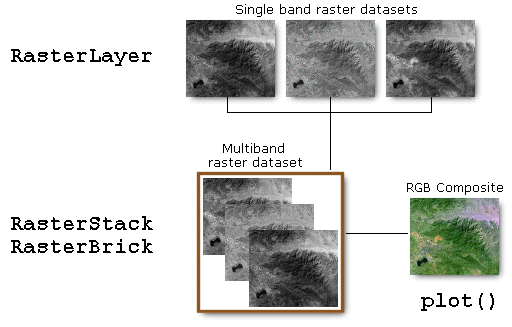

Spatial Data Analysis
with R
BayGeo, Spring
2024
Foundational GIS Concepts
Geospatial Data
Physical World → GIS World
Start by chopping up the real world into different “layers” with
similar features:

Option 1 is to represent features as “vectors” (points, lines and
polygons):
Option 2 is to represent features as a grid or “raster”:
Projections
How do we squish a round planet onto flat maps?
UTM
A common projection system is Universal Transverse
Mercator (UTM). UTM divides the planet up into 60 zones that
are 6 degrees wide. The USA falls in zones 10-19.
What You Need
to Remember about Projections in R
- With rare exceptions (i.e., tmap), R does not reproject on
the fly
- The
sf package can read & write projection
info when importing or exporting GIS files
- If your analysis uses distance or area in any way,
you should use projected coordinates (not
lat-long)
- Some web map packages (e.g., leaflet) require
lat-long
- (Re)projecting is easy (with
st_transform())
- The best way to refer to projections is by EPSG
numbers
Raster Data
Remotely Sensed Data
- satellite sensors
- airborne or UAV mounted
- DEMs from radar

Landsat infrared
image (false-color-composite)
Elevation
(measured from Shuttle)
Derived or modeled data
- interpolated surfaces (e.g., environmental variables,
elevation)
- Kernel density surface (probability of occurrence)
- cost surfaces
- classified images

Land cover map (derived from satellite
image)
Distance to
trails (computed)
Single vs. Multi-Band
Rasters
Rasters with multiple layers are common in multi-spectral data (e.g.,
Landsat). Each band saves the reflectance in a different part of the
electromagnetic spectrum.

Whether saved as separate RasterLayer objects, or a single
multi-layered RasterStack or RasterBrick, up to three layers can be
combined to produce colors when plotting.

Raster Spatial Properties
Raster data structures are always rectangular. The spatial
structure is implicit.
Spatial properties include:
- origin
- projection / CRS
- resolution (pixel size)
Pixel Values: Continuous vs Discrete
Cell values can be either continuous or
discrete.
Continuous

Discrete / Categorical

Discrete rasters also have a ‘Raster Attribute Table’ (RAT), which
stores the name of each category.
Rasters vs. Tiles
Rasters are data you can visualize and
manipulate.
Tiles are background images you get from online
providers for display purposes. They look nice, but what you see is what
you get (no ability to manipulate).
Continuous or Discrete?
How would you represent each of the following surfaces - continuous
or discrete?
- temperature
- land cover
- land use
- soil type
- fire risk